AIF-C01 Crash Course: AWS Certified AI Practitioner
This volume covers the whole AIF-C01 exam in one linear pass. Small ideas first, then the big picture. No repetition, no padding. Read it once, then use the decision trees and practice questions to confirm the knowledge.
The exam in 30 seconds
| Fact | Value |
|---|---|
| Exam | AIF-C01, AWS Certified AI Practitioner |
| Questions | 65 total: 50 scored + 15 unscored (you cannot tell which is which) |
| Time | 90 minutes (about 83 seconds per question, keep moving) |
| Pass | 700 out of 1000 (compensatory: no per-domain minimum) |
| Cost | $100 USD |
| Valid | 3 years |
| Where | Pearson VUE test center or online proctored |
| Formats | Multiple choice, multiple response, ordering, matching, case study |
| Scoring | No partial credit. Unanswered counts as wrong, so answer everything. Guessing is free. |
| Domain | Weight | Scored questions (of 50) |
|---|---|---|
| D1 Fundamentals of AI and ML | 20% | ~10 |
| D2 Fundamentals of Generative AI | 24% | ~12 |
| D3 Applications of Foundation Models | 28% | ~14 |
| D4 Guidelines for Responsible AI | 14% | ~7 |
| D5 Security, Compliance, and Governance | 14% | ~7 |
Domains 2 and 3 are 52% of the exam. That is where your time goes.
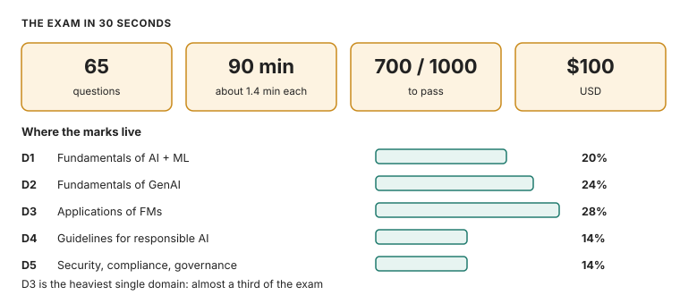
How AWS asks: a short business scenario, then "which service" or "which approach." Two or three options are real AWS services doing a real job, just not this job, but one option fits every constraint in the stem. Read the last sentence first, which is the actual question, then scan for the deciding word. "Private data" points to RAG, retrieval-augmented generation: fetching facts from your documents at query time. "Take actions" points to agents. "Cheapest" points to prompt engineering or batch inference, which scores many items at once.
Out of scope, so do not study it. The list: writing code, data and feature engineering, hyperparameter tuning, building ML pipelines, and deep security frameworks. The exam tests judgment, not implementation.
How to use this volume
- 20 minutes: read "The exam in 30 seconds" and the three decision trees (customization, inference, service map).
- 3 hours: read one domain at a time. Do each knowledge check before moving on.
- 1 day: do all 20 practice questions. Re-read every section you missed.
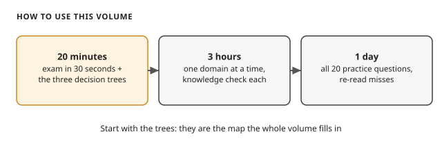
Watch: AWS Certified AI Practitioner AIF C01 Prep 2026, by GetCertPrep (about 50 minutes). Transcript-checked. It walks through ML basics, transformers, tokens and embeddings, Bedrock model selection and pricing, temperature and top-p, and prompt engineering. It ends with RAG and vector databases. A solid single-video pass over the whole exam.
D1 · Fundamentals of AI and ML (20%)
Ladder 1: The AI family (AI → ML → deep learning → GenAI)
Rung 1: The plainest picture. AI means machines doing tasks that need human-like judgment. Examples: recognizing speech, reading documents, making recommendations. Everything in this domain is a smaller circle inside that big idea.
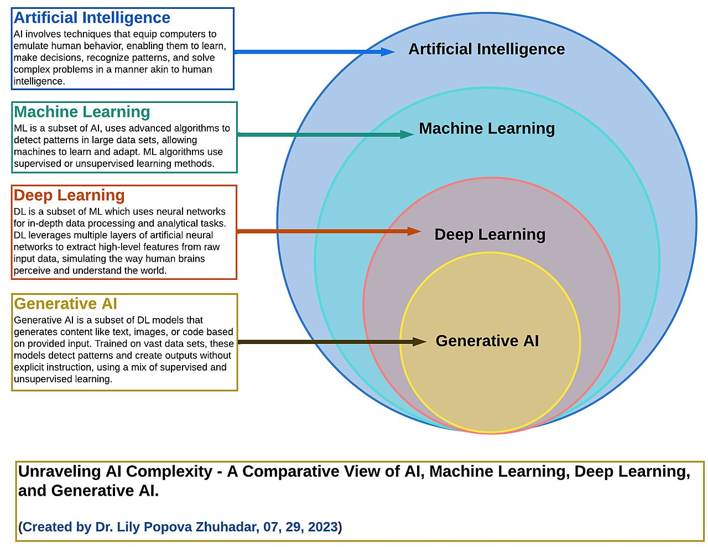
Rung 2: Add one layer. Machine learning is AI that learns from data instead of following hand-written rules. You show it thousands of examples, and it finds the pattern itself. It comes in three flavors. Supervised: the examples include the right answers. Unsupervised: no answers. The model finds groups on its own. Reinforcement learning: the model learns by trial and error, chasing rewards.
Rung 3: Exam grade. Deep learning is machine learning done with neural networks. Neural networks are stacks of simple computing units inspired by brain neurons. Generative AI is deep learning that creates new content: text, images, audio. The nesting from rung 1 is now exact: GenAI ⊂ deep learning ⊂ ML ⊂ AI. Agentic AI (exam guide v1.1) sits at the center too. These are GenAI systems that take actions through tools, not just produce text.
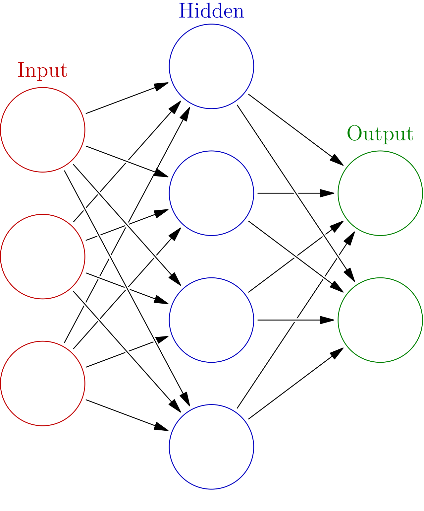
Ladder 2: The three ways models learn
Rung 1: The plainest picture. Supervised learning is learning with an answer key. Every training example comes with its label: this photo is a cat, this transaction is fraud. The model studies labeled examples until it can label new ones.

Rung 2: Add one layer. Unsupervised learning gets no answer key. It looks for natural groups (customers who behave alike) or compresses data down to its essentials. Reinforcement learning gets no answer key either. Instead an agent takes actions in an environment and learns from rewards and penalties, like training a dog with treats.
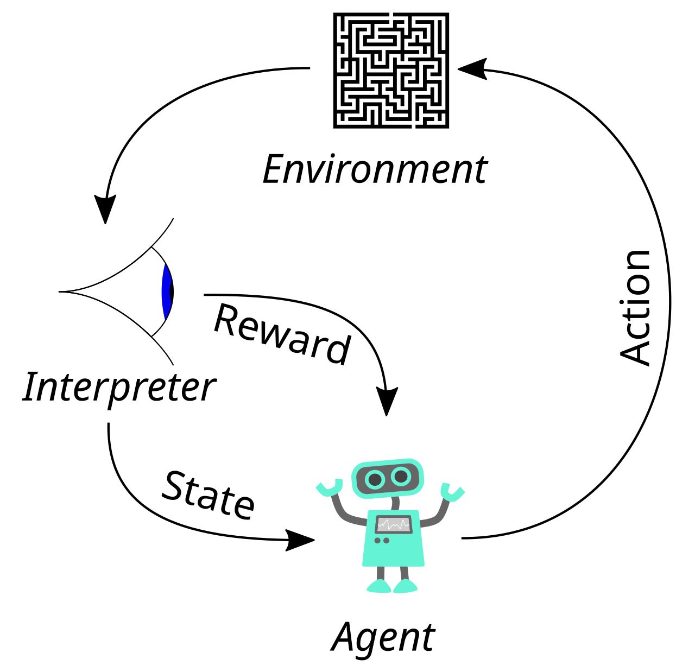
Rung 3: Exam grade. Match the stem to the type. Labeled data and a target to predict means supervised. Unlabeled data and "find groups" means unsupervised. An agent, actions, and rewards means reinforcement learning. Supervised splits further into classification and regression. Classification predicts a category, like fraud or not. Regression predicts a number, like a price. Note the v1.1 connection: RLHF is reinforcement learning with human rankings as the reward signal. RLHF is the technique that aligns chat models with human preferences.

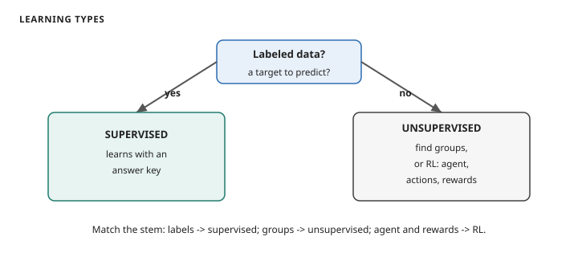
A company wants to predict which customers will cancel, using five years of labeled cancel-or-stay records. Which learning type?
Supervised learning. The records are labeled, and the task predicts a category. If the stem had said "group customers by behavior with no labels", the answer would flip to unsupervised.
Knowledge check: name the learning type
- 1. Sorting support tickets into "billing", "technical", "other" from labeled history. 2. Finding unusual network traffic with no labeled attacks. 3. A robot learning to walk by falling over.
Answers: 1. Supervised (classification: labeled tickets, category output). 2. Unsupervised (anomaly detection on unlabeled data). 3. Reinforcement learning (agent, actions, reward signal).
Ladder 3: Training, inference, and the two failure modes
Rung 1: The plainest picture. Training is the learning phase: the model studies data and adjusts itself. Inference is the using phase: the finished model makes predictions on new data. Training happens once, or periodically. Inference happens every time someone uses the system.

Rung 2: Add one layer. Two things go wrong. Overfitting means the model memorized the training data, noise included, so it fails on new data. Signs: low training error, high test error. Underfitting means the model is too simple to catch the pattern: high error everywhere. You want the middle. The model learns the real pattern and ignores the noise.
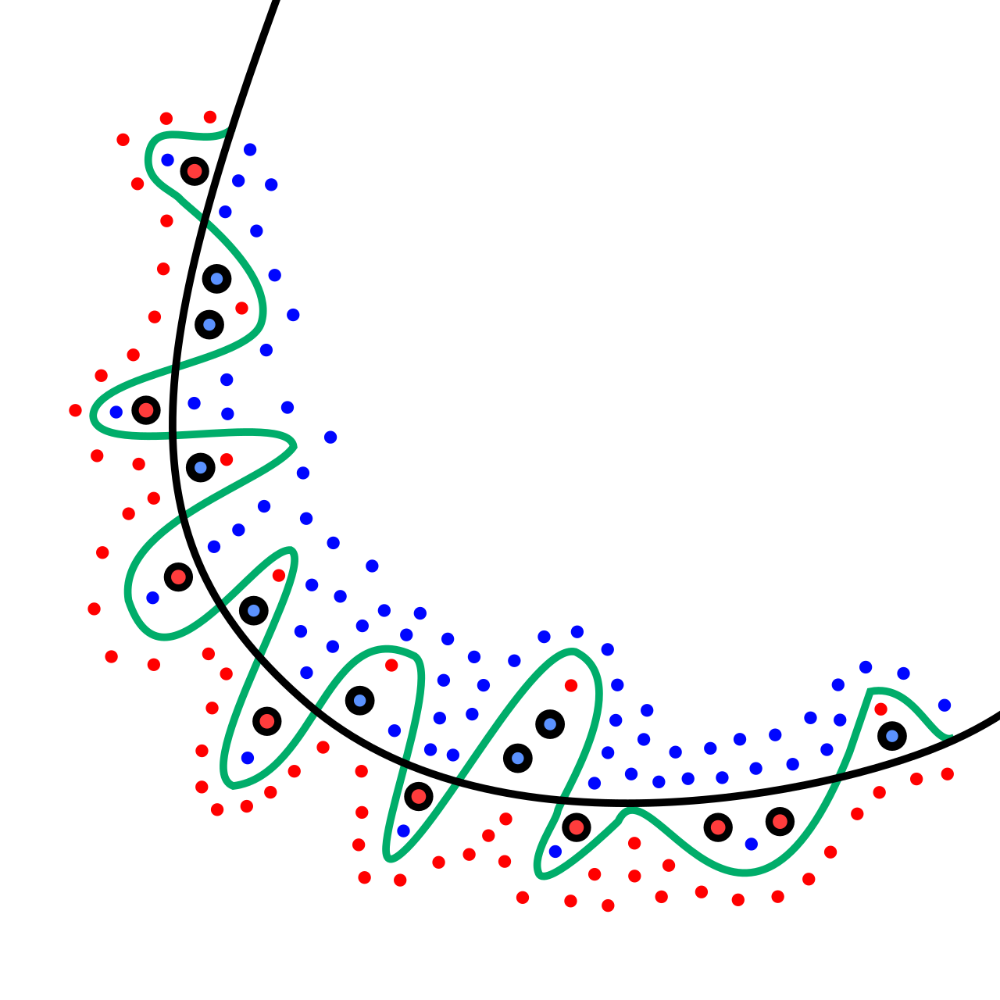
Rung 3: Exam grade. To judge a model you need two kinds of numbers. Model metrics: accuracy, precision, and recall. Accuracy is the fraction correct overall. Precision: of the items flagged positive, how many truly were. Recall: of the truly positive items, how many got flagged. The exam's classic: a fraud model with high precision but low recall catches few criminals while rarely accusing the innocent. Read these off a confusion matrix. Rows are actual classes, columns are predicted classes, and the four cells are true positives, false positives, true negatives, false negatives.
Worked example: reading the confusion matrix
The symbols: TP = truly positive and flagged. FP = innocent but flagged. TN = innocent and cleared. FN = truly positive but missed. The formulas:
accuracy = (TP + TN) / everything
precision = TP / (TP + FP)
recall = TP / (TP + FN)
The exam's classic fraud model, with round numbers: 100 transactions, 10 real frauds. The model flags 8 as fraud, and 6 truly are. So TP = 6, FP = 2, FN = 4, TN = 88.
accuracy = (6 + 88) / 100 = 0.94
precision = 6 / (6 + 2) = 0.75
recall = 6 / (6 + 4) = 0.60
High precision (0.75): rarely accuses the innocent. Low recall (0.60): catches few criminals. That split is the one the exam keeps asking about.
Business metrics sit above: task completion rate, user satisfaction, cost per prediction. The bias-variance link: high bias underfits (too simple), high variance overfits (too twitchy). Fix overfitting with more data or simpler models. Fix underfitting with richer features or bigger models.
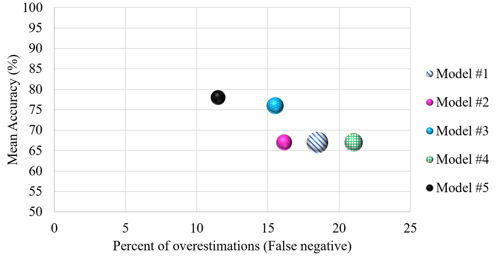
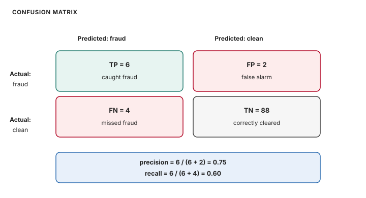
Knowledge check: precision vs recall
A spam filter flags 100 emails as spam. 90 really are spam. Meanwhile 10 real spam emails slipped into the inbox. What are precision and recall?
Precision is 90/100 = 90%. Recall is 90/100 = 90% here too (90 caught of 100 total spam). The point: precision asks "of what you flagged, how much was right." Recall asks "of what was real, how much did you catch."
Ladder 4: The four inference types
Rung 1: The plainest picture. Real-time inference answers now: one request in, one answer back in milliseconds. Example: a fraud check while you tap your card. Batch inference answers later: millions of rows scored on a schedule, like churn scores every Sunday night. The question is always "how fast must the answer come back?"

Rung 2: Add one layer. Two more options fill the middle. Asynchronous inference handles one large payload that takes minutes. You submit, go away, collect the result later. Example: a two-hour video to transcribe. Serverless inference removes server management entirely. It scales to zero when idle and you pay per use, which fits spiky, unpredictable traffic.

Rung 3: Exam grade. The exam hands you a scenario and expects the cheapest fit. Interactive and instant means real-time. Big single payload with minutes to spare means async. Huge volume on a schedule means batch. Unpredictable spikes with no ops team means serverless. Bedrock adds its own flavors. On-demand means pay per token. Provisioned throughput means reserved capacity for steady heavy workloads. Cross-region inference routes across regions for availability.

Knowledge check: which inference type?
- 1. A chatbot answering shoppers. 2. Transcribing one 3-hour board meeting. 3. Scoring 5 million loan applications nightly. 4. A demo app with 10 users today and maybe 10,000 tomorrow.
Answers: 1. Real-time (interactive). 2. Asynchronous (single large payload, minutes OK). 3. Batch (huge volume, scheduled). 4. Serverless (spiky, unpredictable).
Ladder 5: The AWS AI service map
Rung 1: The plainest picture. There are two ways to build. Train your own model from your data: that is SageMaker AI. Use a ready-made foundation model through an API: that is Bedrock. An API is a programmatic way for code to call a service. The exam's first split is always this one.

Rung 2: Add one layer. For everyday AI tasks you do not build at all. You call a specialist service. Text: Comprehend finds insights in text, Translate changes languages, Kendra searches your documents. Voice: Transcribe turns speech into text, Polly turns text into speech. Vision and documents: Rekognition analyzes images and video, Textract reads text from documents. Each does one job well.

Rung 3: Exam grade. Name the service from the verb. "Chatbot" means Lex. "Search company documents" means Kendra. "Read text from scanned forms" means Textract. "Convert a call recording to text" means Transcribe. "Synthesize voice" means Polly. "Detect objects in photos" means Rekognition. "Analyze sentiment" means Comprehend. "Translate" means Translate. Personalize recommends products. Forecast predicts demand (note: not in the v1.1 in-scope list, so the exam will not ask it). For BI questions over data there is Q in QuickSight.
From services to lifecycle. Lex builds conversational interfaces. Q is the ready-made assistant. Services map to the ML lifecycle. S3 (Simple Storage Service: Amazon's object storage) and Glue (the ETL service that cleans and catalogs data) hold and prepare data. SageMaker AI trains. Bedrock and the specialist services serve. MLOps (pipelines, monitoring, retraining) keeps it all running in production. When is AI the wrong answer? When a fixed rule or a database query solves it. When labeled data does not exist and cannot be made. When the cost exceeds the value.
Watch: AWS Certified AI Practitioner AIF-C01 Domain 1, by HOW TO // AI (about 23 minutes). Transcript-checked. It follows exam guide v1.1 through AI and ML fundamentals, the three learning types, neural networks, overfitting and underfitting, and inference types. Watch after D1 to fix the vocabulary in place.
Next: D2 goes inside the generative models: tokens, training, and what changes their answers.
D2 · Fundamentals of Generative AI (24%)
D1 taught you what AI and ML are. D2 goes inside the generative kind: tokens, how models learn, and what changes their answers.
Ladder 1: Tokens, the unit of everything
Rung 1: The plainest picture. Models do not read words. They read tokens, which are chunks of text smaller than words. "Unbelievable" might become "un", "believ", "able". The system counts and prices everything a model does in tokens.
Rung 2: Add one layer. The context window is the model's working memory: the maximum tokens it can consider at once. It covers your prompt plus any retrieved documents plus the conversation so far. Feed it more than fits and the oldest content gets dropped. Long context is powerful and expensive, because cost grows with tokens in.

Rung 3: Exam grade. Token pricing is per input token and per output token. Output tokens cost more because generating text burns more compute. Prompt caching stores repeated prompt prefixes so you pay full price once and a discount after. Inference cost also depends on model size and request volume: bigger models and longer outputs cost more. When a stem asks about cutting cost, think: smaller model, shorter outputs, caching.
Worked example: a request in dollars
Use round illustrative prices: $3 per million input tokens, $15 per million output tokens. One request: 2,000 input tokens, 500 output tokens.
input cost = 2,000 / 1,000,000 x $3 = $0.006
output cost = 500 / 1,000,000 x $15 = $0.0075
total = $0.0135 per request
The output half, though smaller in tokens, costs more than the input half. That is why "smaller model, shorter outputs, caching" is the cost playbook.
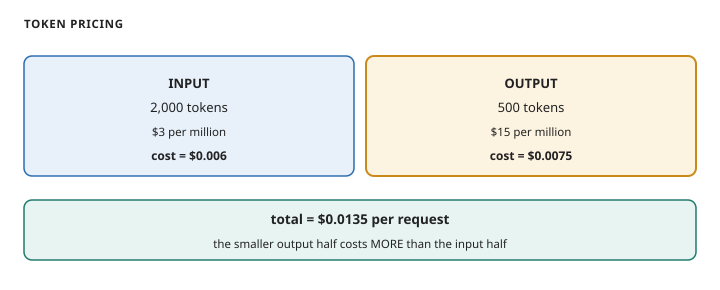
Ladder 2: Embeddings, meaning as coordinates
Rung 1: The plainest picture. An embedding turns text into a list of numbers (a vector) that captures its meaning. Texts with similar meanings get similar numbers, so "king" sits near "queen" and far from "carburetor". Meaning becomes geometry: nearness equals relatedness.

Rung 2: Add one layer. That geometry is what makes semantic search work. Embed the question, then fetch the stored vectors closest to it. The retrieved documents mean something similar to the question even if they share no exact words. This is the retrieval half of RAG (retrieval-augmented generation). D3 builds the full pipeline.
Rung 3: Exam grade. The exam-grade rule: the same embedding model must run at ingest time and at query time. Each model has its own private vector space, and vectors from two models are not comparable. On AWS the vectors live in a vector store. Options: OpenSearch Service (the search and analytics engine), Aurora or RDS for PostgreSQL (relational databases), or Neptune (the graph database). Chunking quality decides retrieval quality, which is why Bedrock Knowledge Bases chunks your S3 documents before embedding them.

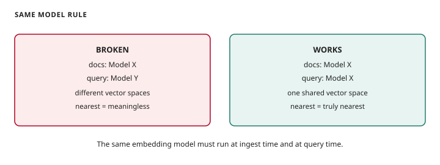
Knowledge check: why did search break?
A team embedded 100,000 documents with Model X, then switched the query side to cheaper Model Y. Retrieval quality collapsed overnight. What broke?
The vector spaces no longer match. Model Y's question vectors live in a different geometry than Model X's document vectors, so "nearest" is meaningless. Fix: embed queries with Model X too, or re-embed everything with one model.
Ladder 3: The Transformer
Rung 1: The plainest picture. The Transformer is the architecture behind modern language models. Its trick: read the whole sentence at once instead of word by word, then predict the next token until the answer is complete. Every chatbot you have used is a Transformer predicting one token at a time.
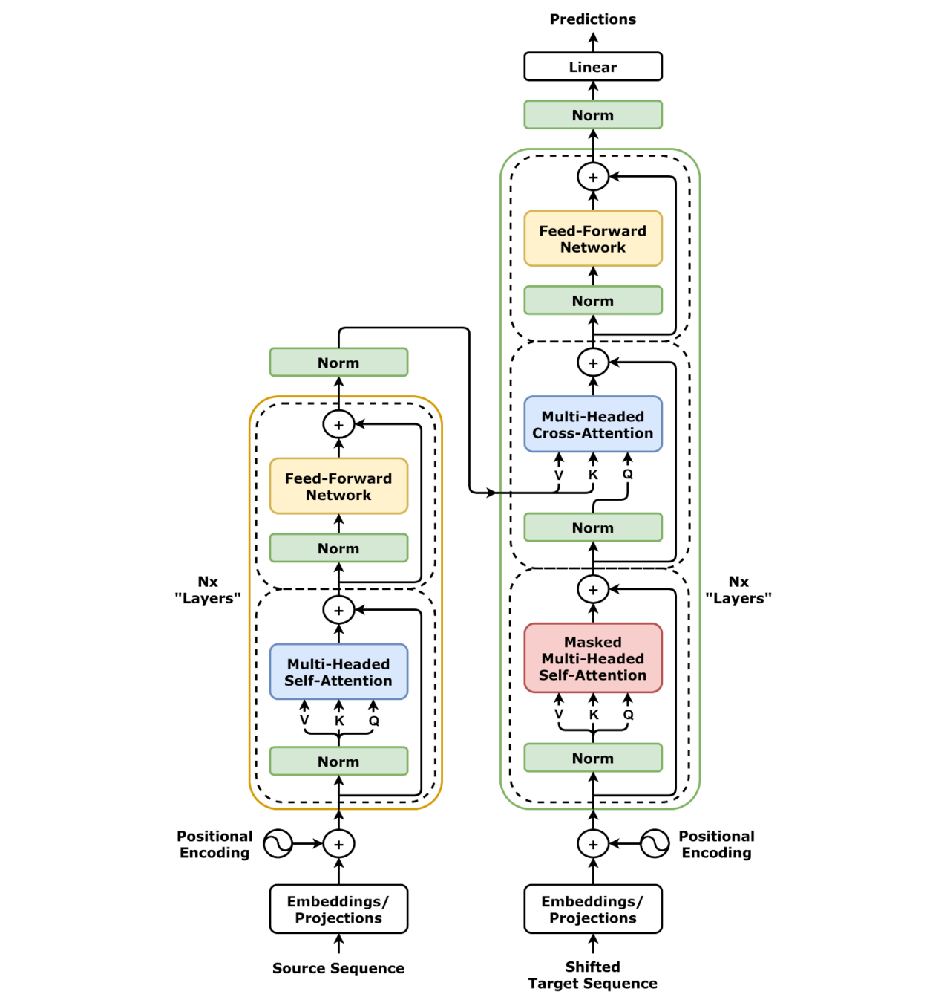
Rung 2: Add one layer. Two halves do the work. The encoder reads and understands the input, turning it into a rich representation. The decoder writes the output one token at a time. Attention is the connection between them: when producing each token, the model looks back at the input and decides which parts matter most.
Rung 3: Exam grade. Self-attention is attention inside a single sentence. Each word looks at every other word and weighs their relevance. In "the animal did not cross the street because it was too tired", self-attention links "it" back to "animal", not "street". That is how the model resolves meaning from context rather than word order. The exam tests this idea, not the math. Attention means weighing which words matter for each prediction.
Ladder 4: Diffusion and multimodal models
Rung 1: The plainest picture. Diffusion models make images from text. They start with pure static noise and gradually remove it, guided by your description, until a picture emerges. Noise in, picture out: that is the whole idea.
Rung 2: Add one layer. Multimodal models accept and produce more than one kind of input: text, images, audio together. Embeddings are the bridge: the model maps text and images into one shared space, so the model can reason across them ("what is funny about this picture?"). A model that only handles text is unimodal. One that handles several types is multimodal.

Rung 3: Exam grade. Match the model type to the task. Text generation means large language models (Transformers). Image generation from text means diffusion models. Finding similar documents means embedding models. "Multimodal input" in a stem means the model takes more than text. Do not confuse diffusion (creates images) with embeddings (represents meaning as vectors).
Ladder 5: Foundation models, lifecycle and selection
Rung 1: The plainest picture. A foundation model is a huge model pre-trained once on massive data, then adapted to many tasks. Train once, reuse everywhere: that reuse is what makes it a "foundation".
Rung 2: Add one layer. The lifecycle runs in order: select and prepare data, pre-train the base model, adapt it (fine-tune or align), evaluate it, deploy it, then monitor it in production. Pre-training builds broad knowledge. Adaptation aims it at your task. Adaptation is orders of magnitude cheaper than pre-training, which is why almost everyone adapts rather than trains from scratch.
Rung 3: Exam grade. Selecting a model means checking accuracy on your task, cost, latency, and whether its size fits your deployment. Open models (weights public, self-hostable) trade control for operational burden. Closed models (API-only) trade convenience for dependence. Model distillation compresses a big capable model into a smaller cheaper one that mimics it: useful when latency or cost bites. Continued pre-training adds domain knowledge before any task adaptation.

Ladder 6: Agents
Rung 1: The plainest picture. A chatbot answers questions. An agent takes actions: it books the flight, files the ticket, queries the database. Answers versus actions is the whole distinction.

Rung 2: Add one layer. The agent runs a loop. Reason about what to do next. Act by calling a tool (an API, a database, a browser). Observe the result. Repeat until you reach the goal. Tools are the agent's hands. Without them it is just a chatbot. A multi-agent pattern splits the work: several specialized agents collaborate, like a researcher agent feeding a writer agent.
Rung 3: Exam grade. The Model Context Protocol (MCP) is the open standard for connecting agents to external systems and data. Tools plug in consistently instead of through one-off integrations. Context engineering means deliberately assembling everything the agent needs (instructions, tools, retrieved facts) into its working context. The exam's agent trigger words: "take actions", "call APIs", "multi-step with tools". If the stem says "answer questions from documents", that is RAG, not agents.

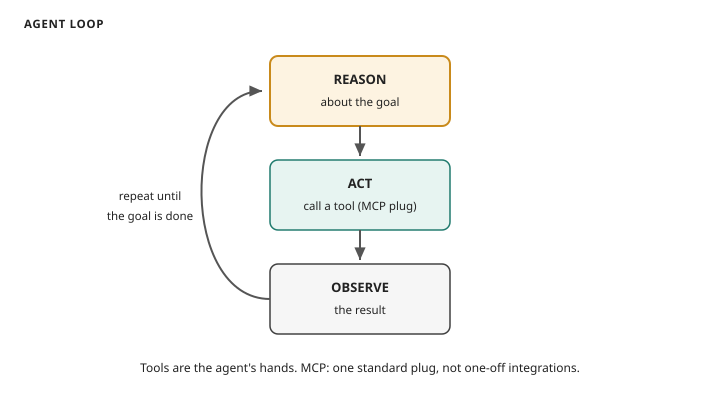
Knowledge check: agent or chatbot?
- 1. A support widget that answers FAQs from the help center. 2. A system that reads a complaint email, checks the order database, and issues a refund by itself.
Answers: 1. Chatbot (answers only, no actions). 2. Agent (multi-step: read, query, act through tools).
Ladder 7: AWS for building GenAI
Rung 1: The plainest picture. Amazon Bedrock is the front door: one API that serves many foundation models from Amazon and others. You pick a model, send a prompt, get text back. No training, no servers.

Rung 2: Add one layer. Around that API, Bedrock bundles the pieces. Knowledge Bases for RAG over your documents. Guardrails for safety filters. Agents for tool-using workflows. Prompt Management for versioning prompts. Model Evaluation for testing. Amazon Q is the ready-made assistant family: Q Business for company knowledge, Q Developer for coding help. PartyRock is the playground for trying prompts without code.
Knowledge check: which AWS GenAI service?
- 1. A team wants to query FMs from Amazon, Anthropic, and Meta through one API. 2. HR wants an assistant that answers questions from company wikis. 3. A developer wants code completions in the IDE.
Answers: 1. Amazon Bedrock (one API, many models). 2. Amazon Q Business (company knowledge assistant). 3. Amazon Q Developer (coding assistant).
Next: D3 builds on the models: the customization ladder, from free prompt tweaks to full pre-training.
D3 · Applications of Foundation Models (28%)
D2 covered the generative models themselves. D3 is what you build with them: the customization ladder, from free prompt tweaks to full pre-training.
Ladder 1: The customization ladder
Rung 1: The plainest picture. The cheapest way to change a model's behavior costs nothing: rewrite the prompt. Better instructions, a few examples, a clearer format. This is prompt engineering, and it adds no new knowledge to the model.

Rung 2: Add one layer. When the model needs facts it was never trained on, fetch them at query time and paste them into the prompt. That is RAG: the model answers from your documents, cites them, and never needs retraining. New knowledge without touching the weights.

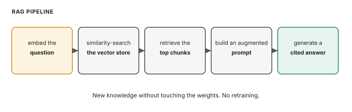
Rung 3: Add one layer. When the need is behavior rather than facts (your brand voice, your output format), continue training the model on your labeled examples. That is fine-tuning: the new behavior lands in the weights. It costs real money and compute, and the knowledge still goes stale.
Rung 4: Exam grade. The full decision tree, cheapest first. Same knowledge with better answers means prompt engineering. New private or current facts means RAG. New behavior, tone, or style means fine-tuning. Whole new base knowledge means pre-training (months, millions, only the largest companies). Two more terms: in-context learning is the fancy name for few-shot prompting (teaching by example with no weight changes). D2 defines model distillation as compressing a big model into a smaller cheaper one that mimics it.

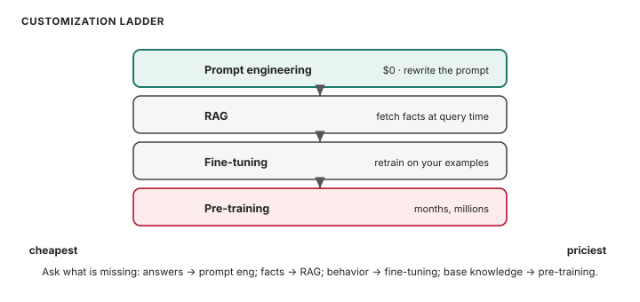
The exam's favorite decision: "facts change over time" or "must cite sources" always points to RAG, never fine-tuning. "New tone, format, or behavior" points to fine-tuning or prompt engineering, never RAG.
Ladder 2: Prompt engineering, rung by rung
Rung 1: The plainest picture. A prompt has parts. Naming them helps you fix weak prompts. The parts: context (who the model should be), instruction (what to do), input data (the material). Also output indicator (the format) and negative prompts (what never to do, like "do not invent details").
Rung 2: Add one layer. Techniques stack by power. Zero-shot: no examples. One-shot: one example. Few-shot: a few examples, also called in-context learning. Chain-of-thought: "think step by step" before answering, best for math and multi-step logic. Prompt templates make reusable skeletons with slots for the variable parts.
Rung 3: Exam grade. Production prompting adds discipline. Be specific and concise, iterate empirically, version prompts with Bedrock Prompt Management instead of pasting strings into code. And know the attacks: prompt injection (smuggled instructions in user input), jailbreaking (tricks past safety rules), poisoning (corrupted training or retrieval data), hijacking (the task gets redirected).
Knowledge check: which technique?
A model keeps getting multi-step word problems wrong. Which prompt technique helps most, and why?
Answer: chain-of-thought. Asking the model to reason step by step before answering improves multi-step reasoning. Few-shot shows examples. Chain-of-thought shows the working.
Ladder 3: Inference parameters
Rung 1: The plainest picture. Temperature is the creativity knob, running from 0 to about 1. Near 0 the model picks the most likely token every time: focused, repeatable, a bit dull. Near 1 it samples more freely: varied, creative, less predictable. Factual work wants 0. Brainstorming wants higher.
Rung 2: Exam grade. Top-p and top-k trim the candidate pool before sampling: smaller values mean safer, more predictable text. Max tokens caps the response length. Hitting the cap truncates the answer mid-sentence. Practical rules: temperature 0 for anything factual or deterministic, and change one knob at a time so you know what helped.
Ladder 4: Fine-tuning methods
Rung 1: The plainest picture. Instruction tuning teaches the model to follow directions: train it on instruction-and-response pairs until it answers in your style and format. Show it what good looks like, repeatedly.
Rung 2: Add one layer. The family grows. Domain adaptation trains on your industry's text so the model speaks your vocabulary. Transfer learning adapts a pre-trained model to a new but related task. Continued pre-training adds domain knowledge before any instruction tuning. RLHF uses human rankings as rewards so the model learns which answers people prefer (this is how models get aligned and polite).
Rung 3: Exam grade. Data preparation decides whether fine-tuning works. Curate the dataset: relevant, high quality. Label it where the method needs labels. Keep it representative of production. Mind governance: consent to use the data, PII (personally identifiable information: names, phone numbers, addresses), and licensing. Final exam line: fine-tuning beats RAG when the need is behavior, not facts. RAG beats fine-tuning when facts change or when the task needs citations.
Ladder 5: Evaluating models
Rung 1: The plainest picture. The simplest check is automatic: compare the model's output against a reference answer and score the overlap. Fast, cheap, repeatable. Human judges are the gold standard. They are slow and expensive, but they catch what metrics miss.

Rung 2: Add one layer. The named metrics: ROUGE measures overlap with reference summaries (summarization). BLEU measures overlap for translation. BERTScore measures semantic similarity via embeddings instead of exact words. LLM-as-a-judge uses a strong model to score a weaker model's outputs: fast and cheap, with its own bias risk. Amazon Bedrock Model Evaluation runs automatic and human evaluations as a managed service.
Rung 3: Exam grade. Then check business alignment, because a high BLEU score means nothing if users hate the product. Check task completion rate, user satisfaction, cost per interaction. Evaluate RAG systems on retrieval quality too (did it fetch the right chunks?). Evaluate agents on whether they completed the task with the right tool calls.
Knowledge check: pick the metric
A team fine-tuned a summarization model. Which automatic metric fits, and what is its blind spot?
Answer: ROUGE, which measures overlap with reference summaries. Blind spot: it rewards word overlap, so a perfectly good paraphrase can score badly. Pair it with human evaluation or LLM-as-a-judge for meaning.
Ladder 6: Agents in production on AWS
Rung 1: The plainest picture. Bedrock Agents turn a foundation model into a worker: you give it a goal, instructions, and action groups (the tools it may call), and it reasons through multi-step tasks.

Rung 2: Add one layer. Demos are easy. Production is the exam's concern. Amazon Bedrock AgentCore is the production home: a runtime plus Identity (which identity the agent acts as) plus Policy (what the agent may do). Strands Agents is the open-source SDK for building agents in code.
Rung 3: Exam grade. The exam's agent trigger words stay constant: "take actions", "call APIs", "multi-step with tools". If the stem says "answer questions from documents", pick RAG. If it says the agent must file tickets, query systems, or book things, pick Bedrock Agents on AgentCore.
Watch: AWS AI Practitioner Exam Prep: RAG, Bedrock Agents and Amazon Q, 15 Questions Explained, by How To Center. Transcript-checked. It works through 15 exam-style Domain 3 questions with full explanations of why each wrong option is wrong. Topics: vector stores, Bedrock Agents, Q Business vs Q Developer, model selection, fine-tuning tradeoffs, provisioned throughput, and grounding. Pause and answer before the reveal.
Next: D4 asks whether the apps are fair, safe, and honest.
D4 · Guidelines for Responsible AI (14%)
D3 built the apps. D4 asks whether they are fair, safe, and honest: bias, transparency, and the responsible-AI guidance.
Ladder 1: Bias and fairness
Rung 1: The plainest picture. Bias means the system treats some groups worse than others. A hiring model that favors one group, a voice assistant that misunderstands one accent. The model learned it from the data, and now it repeats it at scale.
Rung 2: Add one layer. Bias enters through three doors. Historical bias: the data reflects past discrimination (old hiring records that favored one group). Sampling bias: the data does not represent everyone (a voice model trained on one accent). Label bias: the labels themselves encode prejudice. A model can be highly accurate on average and still be unfair to a subgroup.
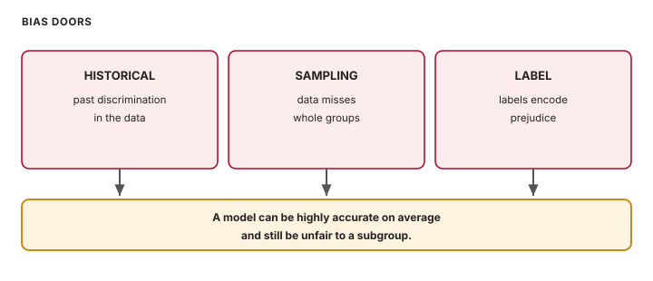
Rung 3: Exam grade. The guide's fairness features: fairness (no group systematically disadvantaged), inclusivity (works for diverse users), safety, veracity (truthful outputs). Fight bias with subgroup analysis (measure performance per group, not just overall) and healthy datasets (inclusive, diverse, curated from trustworthy sources, balanced). The D1 link: high bias underfits, high variance overfits. A biased model is often a high-bias model.
The legal and energy side. Legal risks the exam names: IP infringement from reproducing copyrighted text, discrimination liability from biased outputs, loss of customer trust, and hallucinations presented as fact. Sustainability counts too: training and running large models costs real energy, so the smallest model that meets the need is the responsible pick.
Ladder 2: The responsible-AI toolkit
Rung 1: The plainest picture. Two tools do the daily work. Guardrails sit around the model and filter what goes in and out: block toxicity, redact PII, refuse off-topic requests. Clarify inspects the model itself: it finds bias in data and models and explains individual predictions.
Rung 2: Add one layer. Three more complete the kit. Model Cards document a model's facts: intended use, training data, metrics, limitations. A2I (Augmented AI) routes low-confidence or sensitive predictions to human reviewers. Model Monitor watches deployed models for drift and quality drops. A model that was fair at launch can drift.
Rung 3: Exam grade. Match the tool to the verb. "Detect bias" means Clarify. "Filter outputs" means Guardrails. "Document the model" means Model Cards. "Human review" means A2I. "Watch production" means Model Monitor. Guardrails also run contextual grounding checks. They compare the model's answer against its source text and block answers that stray. This catches hallucinations.
Exam pairing: Clarify finds bias, Guardrails blocks bad content, Model Cards document the model, A2I brings in humans. Match the tool to the verb in the stem. "Detect bias" is Clarify. "Filter outputs" is Guardrails.
Knowledge check: which responsible-AI tool?
- 1. A bank must prove its loan model does not discriminate by zip code. 2. A chatbot must refuse to output personal phone numbers. 3. A hospital wants a doctor to review every AI-flagged scan before action.
Answers: 1. SageMaker Clarify (detect bias, subgroup analysis). 2. Bedrock Guardrails (filter PII in outputs). 3. Amazon A2I (human review workflow).
Ladder 3: Transparency and explainability
Rung 1: The plainest picture. Transparent means you can see how the system works: open weights, documented data, clear licensing. Explainable means you can say why it made a specific decision. These are different things, and the exam separates them exactly this way.

Rung 2: Exam grade. A model can be transparent without being explainable. You can read every weight of a huge neural network and still not know why it denied a loan. The tradeoff the exam names: the most capable models tend to be the least interpretable, so measure both and choose consciously. Helpers: Model Cards and Clarify, Bedrock Model Evaluations, open models with open data.
Design for the human. Human-centered design keeps people in charge. Show users when AI produces the answer. Give feedback mechanisms ("this answer was wrong"). Keep a human in the loop for high-stakes calls.
Next: D5 covers the locks and the paper trail: AI security threats and governance.
D5 · Security, Compliance, and Governance (14%)
D4 covered responsible use. D5 covers the locks and the paper trail: AI security threats and governance.
Ladder 1: The shared responsibility model for AI
Rung 1: The plainest picture. AWS secures the building: data centers, network, hardware. You secure your rooms: your data, who can access it, how you encrypt it. If you leave your door open, the failure is yours.
Rung 2: Add one layer. For AI workloads the split gets specific. AWS handles the managed infrastructure under Bedrock and SageMaker. You handle IAM, Identity and Access Management (who can call what, with least privilege). You handle encryption settings and KMS keys (KMS is the Key Management Service). You handle network access (your VPC, the Virtual Private Cloud, and PrivateLink). You handle the AI choices themselves: which model, how you configure guardrails, what the prompts contain.
Rung 3: Exam grade. Two Bedrock privacy facts the exam loves. Bedrock does not train its base models on your prompts or data. Your fine-tuned customizations stay private to your account. Bedrock encrypts your inputs and never shares them with model providers. Data residency (some data must stay in a specific region) and retention rules are also your responsibility.
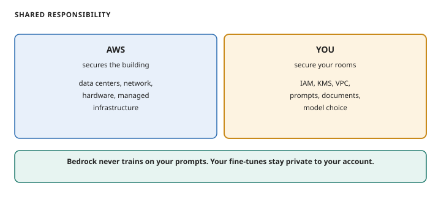
Knowledge check: who is responsible?
A company stores customer chat logs in S3 and uses them to fine-tune a Bedrock model. The S3 bucket is left public. Whose failure is that under the shared responsibility model?
Answer: the customer's. AWS secures the S3 infrastructure. Access control on the bucket is the customer's job. Same for IAM policies, KMS settings, and what data they choose to upload.
Ladder 2: Securing the AI system
Rung 1: The plainest picture. Lock the doors first. IAM roles and policies with least privilege: grant only the access needed, nothing more. A Bedrock-calling app gets permission to invoke models, not admin over the account. Encrypt data at rest with KMS and in transit with TLS (Transport Layer Security, the encryption under HTTPS). Secrets (API keys, passwords) go in Secrets Manager, never in code.
Rung 2: Add one layer. Then shrink the attack surface. Keep traffic off the public internet with VPC endpoints (PrivateLink) to Bedrock and S3. Scan S3 with Macie to find PII before it ever reaches a training set. Filter live inputs and outputs with Bedrock Guardrails: toxicity filters, PII redaction, topic blocking, grounding checks. For agents, AgentCore Identity says who the agent acts as and Policy caps what it may do.
Rung 3: Exam grade. Name the AI-specific threats: prompt injection (malicious instructions smuggled in input), data leakage (the model revealing private training or retrieved data), toxicity in outputs. Defenses: validate and filter inputs, give tools least-privilege access, filter and validate outputs, keep an audit trail with CloudTrail logging every API call.
Grounding fights hallucinations. Methods: RAG grounding (answers from retrieved documents), output validation (check answers against rules), confidence scoring (route low-confidence answers to humans via A2I). Data lineage answers "where did this data come from": document origins with cataloging and Model Cards, cite sources in RAG answers.
Ladder 3: Governance and compliance
Rung 1: The plainest picture. Governance means rules for data's whole life: how you collect it, where it lives, how long you keep it, who touched it. Without rules, nobody can prove anything to an auditor.
Rung 2: Add one layer. AWS provides the toolkit. CloudTrail logs every API call: the audit trail. Config checks resources against compliance rules and records configuration history. Audit Manager collects evidence for audits automatically. Artifact gives on-demand access to AWS's own compliance reports (SOC service audits, ISO security standards, PCI payment-card security). Trusted Advisor checks your account against best practices. Inspector finds software vulnerabilities in EC2 and containers.
Rung 3: Exam grade. Match the tool to the verb. "Log API calls" is always CloudTrail. "Check compliance rules" is Config. "Gather audit evidence" is Audit Manager. "Read AWS compliance reports" is Artifact. "Best-practice advice" is Trusted Advisor. Processes matter as much as tools. Use written policies, a regular review cadence, and team training on AI risks. Use the Generative AI Security Scoping Matrix to decide how much scrutiny each use case needs. Transparency standards: document what the system does, what data it uses, and where humans stay in the loop.
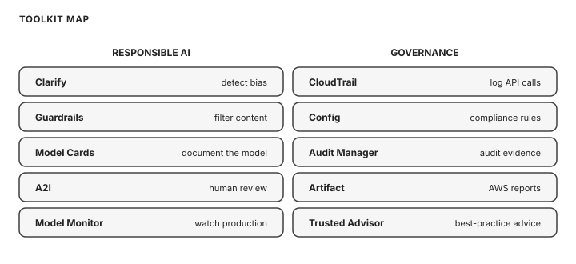
Exam pairing: Config checks compliance, Audit Manager gathers audit evidence, Artifact holds AWS's compliance reports, CloudTrail logs API calls, Trusted Advisor gives best-practice advice. "Prove to an auditor" points to Audit Manager or Artifact. "Log API activity" is always CloudTrail.
Next: the whole exam on one page: which customization, which inference option, and the service map.
Decision trees: the whole exam on one page
Which customization? Same knowledge, better answers: prompt engineering. New private or current facts: RAG. New behavior, tone, or style: fine-tuning. Whole new knowledge from scratch: pre-training.
Which inference? Interactive and instant: real-time. Big single payloads, minutes OK: asynchronous. Scheduled bulk, cheapest: batch. Spiky traffic, pay per use: serverless.
Which service? Train your own model: SageMaker AI. Use an FM via API: Bedrock. Chatbot: Lex. Search company docs: Kendra. Text insights: Comprehend. Images: Rekognition. Speech to text: Transcribe. Text to speech: Polly. Translate: Translate. Read documents: Textract. Recommend: Personalize. Ask BI questions: Quick. Code assistant: Q Developer or Kiro (Amazon's agentic coding assistant). Run agents in production: AgentCore.
Which responsible-AI tool? Detect bias: Clarify. Filter content: Guardrails. Document the model: Model Cards. Human review: A2I. Watch production: Model Monitor.
Which governance tool? Log API calls: CloudTrail. Check compliance rules: Config. Gather audit evidence: Audit Manager. Read AWS compliance reports: Artifact. Best-practice checks: Trusted Advisor.
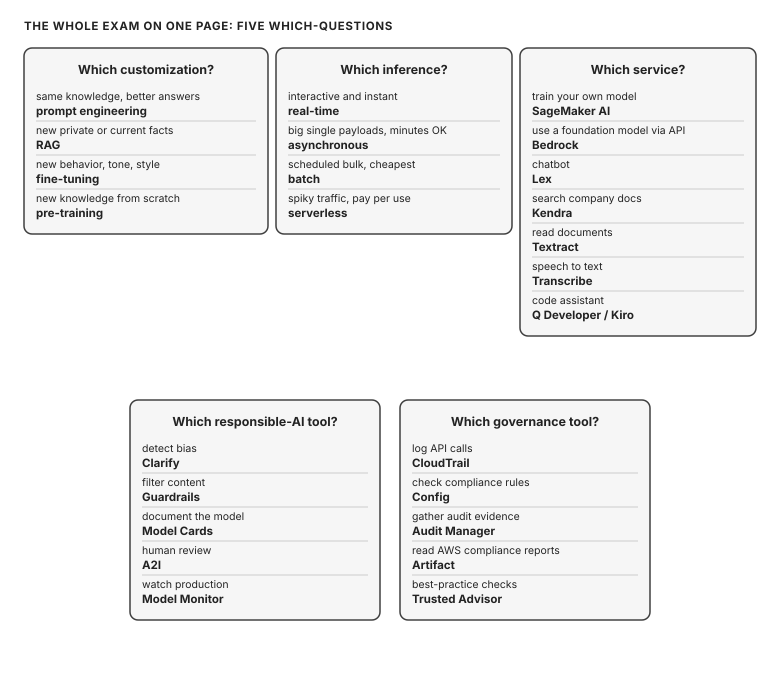
Confusion pairs: the traps
Read each pair once. The exam separates them exactly this way.
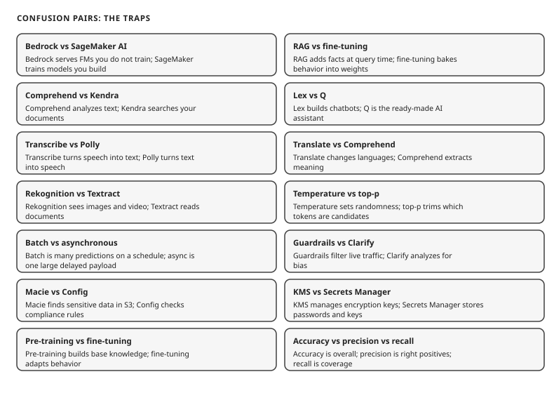
- Bedrock vs SageMaker AI: Bedrock serves foundation models you do not train. SageMaker AI trains and hosts models you build.
- RAG vs fine-tuning: RAG adds facts at query time (weights unchanged). Fine-tuning builds behavior into weights.
- Comprehend vs Kendra: Comprehend analyzes text. Kendra searches your documents.
- Lex vs Q: Lex builds chatbots. Q is the ready-made AI assistant.
- Transcribe vs Polly: Transcribe turns speech into text. Polly turns text into speech.
- Translate vs Comprehend: Translate changes languages. Comprehend extracts meaning.
- Rekognition vs Textract: Rekognition sees images and video. Textract reads text from documents.
- Temperature vs top-p: Temperature sets randomness of the whole distribution. Top-p trims which tokens are candidates.
- Batch vs asynchronous: Batch is many predictions on a schedule. Async is one large payload with a delayed result.
- Guardrails vs Clarify: Guardrails filter live inputs and outputs. Clarify analyzes data and models for bias.
- Macie vs Config: Macie finds sensitive data in S3. Config checks resources against compliance rules.
- KMS vs Secrets Manager: KMS manages encryption keys. Secrets Manager stores secrets like passwords and API keys.
- Pre-training vs fine-tuning vs continued pre-training: Pre-training builds base knowledge from scratch. Fine-tuning adapts behavior for a task. Continued pre-training adds domain knowledge before fine-tuning.
- Accuracy vs precision vs recall: Accuracy is overall correctness. Precision is correctness of positive predictions. Recall is coverage of actual positives.
One look at the API (not on the exam)
Coding is out of scope. This is just so the words "API call" mean something concrete. Heavily commented, plain English throughout.
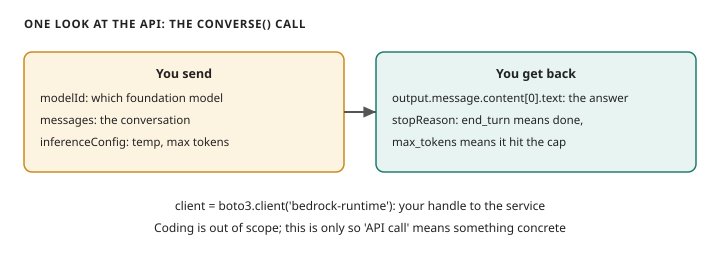
# You will never write this on the exam. It shows what "calling a
# foundation model through Bedrock" looks like under the hood.
import boto3 # boto3 is the Python library for calling AWS services
# A client is your handle to one AWS service. Here: the Bedrock Runtime,
# which is the service that runs inference (getting answers from models).
client = boto3.client("bedrock-runtime", region_name="us-east-1")
# converse() is the single API for chat-style calls on Bedrock.
# modelId picks the foundation model. messages holds the conversation.
# inferenceConfig carries the knobs from D3: temperature and max tokens.
response = client.converse(
modelId="amazon.nova-micro-v1:0", # small, cheap, fast: pick per the selection factors
messages=[{"role": "user", "content": [{"text": "Summarize refunds in one sentence."}]}],
inferenceConfig={"temperature": 0, "maxTokens": 100}, # 0 = focused, factual
)
# The answer text lives inside the response. stopReason tells you how the
# model finished: "end_turn" means done, "max_tokens" means it hit the cap.
print(response["output"]["message"]["content"][0]["text"])
print(response["stopReason"])
From the community
Genuinely useful, each checked before linking:
- I scored 1000/1000 on AIF-C01: every resource I used. A perfect scorer's four-layer study system: video lectures first for the mental model, then docs, then practice questions, then revision. It confirms the freeCodeCamp course and Maarek course as the two most-cited resources.
- AWS AI Practitioner Certification Guide 2026. A domain-by-domain guide with the decision tree this volume mirrors: new facts need RAG, new behavior needs fine-tuning, better outputs need prompt engineering.
- AIF-C01 study plan and exam guide walkthrough. A realistic two-week plan plus notes on 2026 Bedrock features now in scope: AgentCore policy controls, cross-region inference, guardrail grounding checks.
Practice questions
Twenty exam-style questions across every format the exam uses. Cover the options, commit to an answer, then reveal.
A bank labels 50,000 past transactions as "fraud" or "legitimate", then trains a model to score new transactions as they arrive. Which learning type and task does this describe?
Correct: A. The data is labeled (fraud/legitimate) and the model predicts a category for new transactions, which is supervised classification. B is wrong: clustering works on unlabeled data to find natural groups. Here the labels exist. C is wrong: no agent, environment, or reward signal is involved. D is wrong: regression predicts a number (like a price), not a category.
A retailer scores 2 million customers for churn risk every Sunday night. Nobody waits for the results. Which inference type gives the lowest cost?
Correct: A. Batch handles huge volumes on a schedule with the lowest cost per prediction. Latency does not matter here. B is wrong: real-time is for millisecond interactive responses and costs more per request. C is wrong: async fits single large payloads with delayed results, not scheduled bulk scoring. D is wrong: serverless fits spiky unpredictable traffic, not a fixed weekly job.
Match each term to its definition. Terms: 1. Training 2. Inference 3. Overfitting. Definitions: a. Using a finished model to make predictions on new data b. Teaching a model patterns from data c. Memorizing training data so the model fails on new data.
Correct: A. Training teaches (b), inference predicts on new data (a), overfitting memorizes (c). B is wrong: it swaps training and inference. C is wrong: inference is not overfitting. D is wrong: training is not memorizing; overfitting is the failure mode, not the process.
A company wants to analyze 100,000 product reviews to find whether each one is positive, negative, or neutral. Which AWS service fits?
Correct: A. Comprehend performs NLP on text, including sentiment analysis. B is wrong: Rekognition analyzes images and video, not text sentiment. C is wrong: Translate changes languages. It does not score sentiment. D is wrong: Polly turns text into speech.
Which statement about token-based pricing for foundation models is true?
Correct: B. Pricing is per token in each direction, with output priced higher because generation costs more compute. A is wrong: on-demand pricing is usage-based, not flat. C is wrong: prompt caching discounts repeated prompt prefixes. It lowers cost. D is wrong: context length affects price tiers. Nothing about it is free.
A team embedded its documents with embedding model X, then switched the query side to model Y to save money. Retrieval quality collapsed. What is the most likely cause?
Correct: A. Each embedding model has its own vector space. Ingest and query must use the same model or "nearest" becomes meaningless. B is wrong: storage limits cause errors, not silent quality collapse. C is wrong: temperature affects generation randomness, not retrieval. D is wrong: chunking speed does not change vector geometry.
A marketing team wants product images generated from text descriptions. Which model type fits?
Correct: A. Diffusion models generate images by reversing a noise-adding process, guided by text. B is wrong: embedding models turn text into vectors for search; they do not create images. C is wrong: classification picks categories. D is wrong: clustering finds groups in data.
Which TWO statements correctly describe the Model Context Protocol (MCP)?
Correct: A and C. MCP standardizes how agents reach tools and data, so integrations work the same everywhere. B is wrong: MCP connects; it does not train. Bedrock does not train base models on prompts at all. D is wrong: IAM still governs permissions. E is wrong: injection defense comes from input validation and guardrails, not MCP.
A company's 4,000-page support manual changes every week. Support answers must quote the manual and cite the page. Which approach fits?
Correct: A. Weekly changes make fine-tuning go stale within days. RAG retrieves current pages at query time and can cite them. B is wrong: fine-tuning bakes knowledge into weights that would be outdated next week, and it cannot cite pages. C is wrong: pre-training from scratch is the most expensive option and unjustified for this need. D is wrong: the base model never saw the private manual, so it would hallucinate.
A company wants its support bot to answer every reply in a warm, playful brand voice. Product facts rarely change. Which approach fits?
Correct: A. The need is behavior (tone and style), not facts. Fine-tuning builds the voice into the weights. B is wrong: RAG supplies facts. The facts are not the problem here. C is wrong: pre-training is orders of magnitude more expensive than needed. D is wrong: high temperature adds randomness, not a consistent brand voice.
Order the foundation model lifecycle steps from first to last. Steps: 1. Pre-training 2. Data selection 3. Deployment 4. Fine-tuning 5. Evaluation.
Correct: A. Select data, pre-train on it, fine-tune for the task, evaluate, then deploy. B is wrong: pre-training cannot come before data selection. C is wrong: fine-tuning happens after pre-training, not before. D is wrong: it skips fine-tuning and puts evaluation after deployment.
A model extracts invoice totals and must return the identical answer every time for the same invoice. Which setting helps most?
Correct: A. Temperature near 0 makes output focused and repeatable, which is what factual extraction needs. B is wrong: high temperature adds creative variation, the opposite of repeatable. C is wrong: widening top-p adds candidate tokens, increasing variation. D is wrong: max tokens caps length; it does not control determinism.
A prompt shows three example input-output pairs before the real request, so the model copies the pattern. Which technique is this?
Correct: A. Giving examples inside the prompt is few-shot prompting (in-context learning). B is wrong: zero-shot gives no examples. C is wrong: chain-of-thought asks for step-by-step reasoning, not examples. D is wrong: distillation compresses a model; it is not a prompting technique.
A team fine-tuned a summarization model and wants automatic scoring of generated summaries against reference summaries. Which metric fits?
Correct: A. ROUGE measures overlap between generated and reference summaries. It is the standard automatic metric for summarization. B is wrong: click-through is a product metric, not a text-quality metric. C is wrong: temperature is an inference parameter. D is wrong: token count measures length, not quality.
Case study: Northwind Traders runs an online store. Support agents answer from a 4,000-page product manual that changes weekly. Leadership wants a chat assistant that quotes the manual, cites the page for every answer, and never invents policies. Phase 2 will let the assistant file return tickets in the order system by itself. Question 1: Which approach fits phase 1?
Correct: B. Weekly changes rule out fine-tuning (knowledge goes stale). Citations require retrieval. The task needs no behavior change. A is wrong: baked-in weights cannot stay current with weekly changes and cannot cite pages. C is wrong: pre-training from scratch is the most expensive path and unjustified. D is wrong: the base model never saw the private manual and would hallucinate.
Same case study as the previous question. Question 2: In phase 2 the assistant must file return tickets in the order system on its own. Which AWS approach fits?
Correct: B. Filing tickets means taking actions through tools across steps, which is the agent pattern. A is wrong: Knowledge Bases retrieve documents; they do not call APIs. C is wrong: Guardrails filter content; they do not act. D is wrong: Clarify detects bias in models; it is unrelated to actions.
A bank must check its loan-approval model for discrimination across demographic groups before launch. Which AWS service fits?
Correct: A. Clarify detects bias in data and models and explains predictions, including subgroup analysis. B is wrong: Guardrails filter live inputs and outputs; they do not analyze training bias. C is wrong: Macie finds PII in S3; it does not assess model fairness. D is wrong: Artifact provides AWS compliance reports; it does not test your model.
Which TWO does the exam guide name as features of responsible AI?
Correct: A and B. Fairness (no group systematically disadvantaged) and veracity (truthful outputs) are guide-named features, alongside inclusivity and safety. C is wrong: model size is a selection factor, not a responsible-AI feature. D is wrong: nondeterminism is a GenAI limitation, not a goal.
A company stores customer training data in S3 and fine-tunes a model on Bedrock. Who is responsible for encrypting the S3 data and controlling who can access it?
Correct: A. Under the shared responsibility model, data protection and access control are the customer's job. AWS secures the underlying infrastructure. B is wrong: AWS provides the tools (KMS, IAM) but the customer must configure them. C is wrong: model providers do not manage your S3 buckets. D is wrong: auditors verify. They do not implement.
An auditor asks for a record of every Bedrock API call made in the last quarter, including who called what and when. Which service provides this?
Correct: A. CloudTrail logs every API call with caller identity and timestamp: the audit trail. B is wrong: Config tracks resource configuration compliance, not API call history. C is wrong: Artifact holds AWS's own compliance reports, not your API logs. D is wrong: Inspector finds software vulnerabilities; it does not log API calls.
Where to go next. This prereq was the vocabulary. The real exam starts with D1 · Foundation Models, Data & Compliance, where every AIF-C01 concept returns at exam grade.